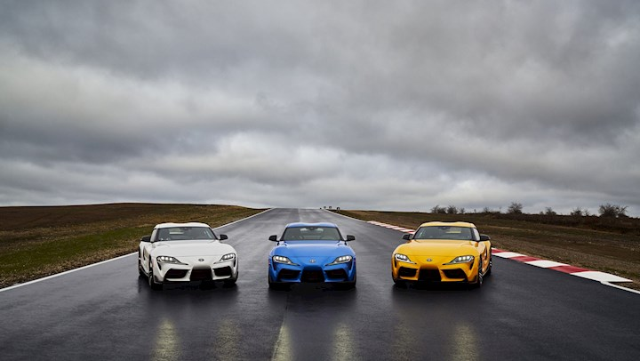
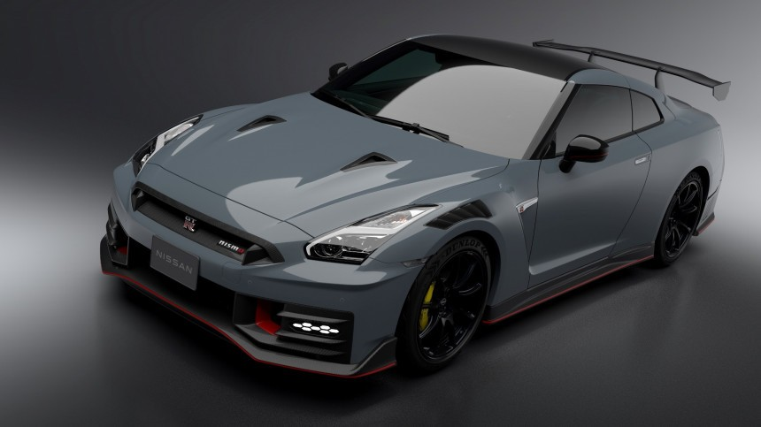

The modern era of JDM cars reflects a blend of cutting-edge technology, environmental consciousness, and continued performance excellence. While the tuner culture of the past still thrives, today's JDM landscape embraces both innovation and tradition. The Nissan GT-R R35 exemplifies this balance. Introduced in 2007 and continually updated, the R35 carries the GT-R legacy into the 21st century with a VR38DETT twin-turbo V6, all-wheel drive, and sophisticated electronics. Toyota's GR Supra, co-developed with BMW, reintroduced the Supra nameplate with a modern twist, combining turbocharged power with sleek design.

Honda's Civic Type R, especially the FK8 and FL5 generations, has proven that front-wheel-drive cars can deliver exhilarating performance, while Subaru's WRX STI continues to evolve as a rally-bred powerhouse. Hybrid and electric innovations have also begun to shape the JDM market, with models like the Toyota GR Yaris showcasing how small, efficient cars can still be thrilling to drive. Digital platforms have amplified the influence of JDM culture. Sim racing, YouTube channels, and social media have created global communities where enthusiasts share builds, races, and reviews. Virtual tuning and car culture have become as significant as physical meetups, showing how the spirit of JDM continues to evolve. Today, JDM cars remain a cornerstone of global automotive culture. They continue to inspire, innovate, and captivate a new generation of enthusiasts who respect the past while driving toward the future.